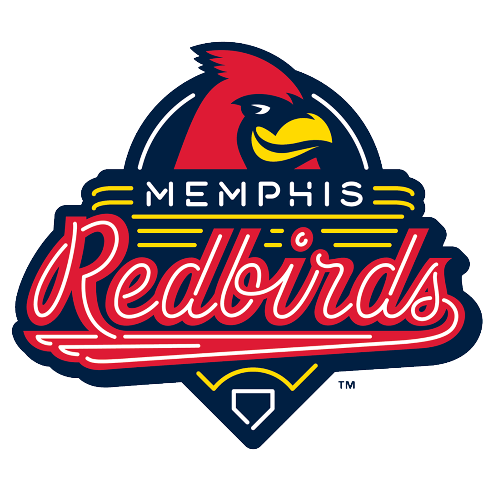
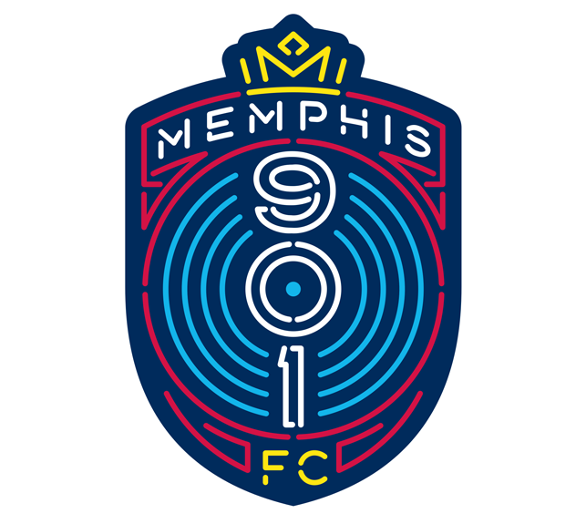

Hey! You're probably here because you found this link on my resumé
Take a look around, get know know me a little better, and check out some projects I've worked on
Born and raised in the 'Show-Me' state, I moved to Memphis shortly after graduating from college for what I thought would be a 10-week summer job repairing homes in Binghampton. Ten years later I'm still here and love being a Memphian. In that time I've met and married my wife, adopted two pups, bought a home, made lifelong friends, and watched as this city has changed before my eyes. I've had the honor of working with a few of Memphis' most reputable organizations and take pride in being an active member in shaping my community.
WORK HISTORY


MEMPHIS REDBIRDS / 901 FC - Memphis,TN
Oversee all aspects of operations related to the playing surface and surrounding grounds at AutoZone Park including baseball games, soccer matches, field conversions, outside events, staff hiring and scheduling, budget management, planning and executing an agronomic plan, operational strategy, planning field renovation projects, and hiring outside contractors when needed. Help to plan events that will maximize revenue while also employing strategies that will protect the field and limit potential damage.
- Oversaw the planning and execution of the first ever soccer match at AutoZone Park on September 1, 2018
- Developed the field conversion strategy and operational budget for inaugural season of Memphis 901FC soccer
- Determined field conversion equipment needs and presented purchasing recommendations to ownership group
- Created an agronomic plan addressing the increased usage of AutoZone Park within a predetermined budget
- Managed grounds staff consisting of a full-time assistant and nearly 20 seasonal employees
- Regularly made decisions regarding weather and protecting the playability of the field
- Assessed unforeseen issues and took corrective action to ensure the integrity and aesthetics of the playing field
- Faithfully worked irregular hours to meet schedule and weather related challenges
Oversee all aspects of operations related to the playing surface and surrounding grounds at AutoZone Park including baseball games, soccer matches, field conversions, outside events, staff hiring and scheduling, budget management, planning and executing an agronomic plan, operational strategy, planning field renovation projects, and hiring outside contractors when needed. Help to plan events that will maximize revenue while also employing strategies that will protect the field and limit potential damage.
- Oversaw the planning and execution of the first ever soccer match at AutoZone Park on September 1, 2018
- Developed the field conversion strategy and operational budget for inaugural season of Memphis 901FC soccer
- Determined field conversion equipment needs and presented purchasing recommendations to ownership group
- Created an agronomic plan addressing the increased usage of AutoZone Park within a predetermined budget
- Managed grounds staff consisting of a full-time assistant and nearly 20 seasonal employees
- Regularly made decisions regarding weather and protecting the playability of the field
- Assessed unforeseen issues and took corrective action to ensure the integrity and aesthetics of the playing field
- Faithfully worked irregular hours to meet schedule and weather related challenges
SERVICE OVER SELF - Memphis,TN
Part of construction staff for non-profit home repair camp. Directed 10+ different construction crews of seasonal staff and volunteers at different sites throughout Memphis. Helped plan and instruct training program for seasonal staff. Planned and executed facility maintenance of the SOS building and grounds while maintaining a budget. Coordinated SOS facility rental to outside groups in addition to performing associated administrative duties.
- Developed 10-year, $1,000,000+ capital improvement plan for SOS facilities
- Supervised capital improvement projects
- Significantly contributed to restructuring and streamlining camp related processes
BINGHAMPTON DEVELOPMENT CORPORATION - Memphis,TN
Assisted in planting and harvesting crops. Spearheaded multiple infrastructure projects including installing an irrigation system, constructing a work area for processing crops, and building raised beds. Delivered food to local restaurants. Contributed to maintaining and improving the Urban Farms Market.
EDUCATION
TECH901 - Memphis,TN